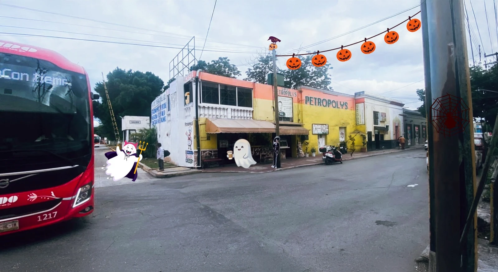

01

EN EL CORAZÓN DE MÉRIDA · ABIERTO 24/7
Mérida sabe mejor
en Petropolys.
De un buen desayuno a ese antojo de medianoche. Cocina mexicana y yucateca, porciones generosas y una mesa para ti.
DESAYUNOS · COCINA MEXICANA · SABOR YUCATECODESCUBRE EL SABOR
PLATILLOS
¿Ya sabes qué se te antoja?
Cuéntanos que vienes de nuestra página web o redes sociales y disfruta un postre de cortesía.
NOSOTROS
Sabor de Mérida,
atención que se recuerda.
En Café Petropolys queremos que cada visita se sienta cercana, rica y auténtica. Reunimos desayunos, cocina mexicana y yucateca, platillos abundantes y una atención amable en una ubicación práctica del centro de Mérida.
Un lugar para desayunar temprano, comer bien y volver cuando se te antoje.
CONOCE NUESTRO MENÚ →
Sabor de casa.
A cualquier hora.
A cualquier hora.
PEDIDOS
Tu pedido, directo por WhatsApp.
De día o de noche, estamos para atenderte. Elige tu turno o usa “Pedir ahora” para contactar al equipo disponible.
Consultando horario de pedidos…
Aceptamos pagos con tarjeta y transferencia.
Facturamos tu consumo.Envíanos tus datos fiscales.
RESEÑAS
OPINIONES DE
NUESTROS CLIENTES
Lo que más disfrutamos: saber que quieres volver.
Ver más en Google Maps ↗
★★★★★
HACE 2 DÍAS
Excelente servicio
Excelente servicio, la comida y los postres muy ricos, recomiendo el platillo poc chuc. Muy bien ubicados y precios accesibles. Personal muy amable.
MEX Berserk :v
★★★★★
HACE 2 DÍAS
Muy buen servicio
Muy buen servicio, la comida está muy rica y tienen una amplia variedad de platillos a buen precio.
Alberto Correa
★★★★★
HACE 3 DÍAS
Todo rico
Todo rico.
claudio xolocotzi
★★★★★
HACE 3 DÍAS
Excelente servicio
Excelente servicio.
Maximiliano Sánchez
★★★★★
HACE 3 DÍAS
Rico y rápido
Cumplen con la cortesía, rico el huevo con jamón. Tiempo de espera menor a 10 minutos.
Miguel PleytesReseñas incluidas en nuestro sitio. La antigüedad corresponde al momento de su recopilación.
VISÍTANOS
Nos vemos en Petropolys.
Calle 70 núm. 530, entre 69 y 71, Centro,Mérida, Yucatán.
Detrás de la terminal de ADO Mérida.
Café PetropolysCentro de Mérida · Abierto 24/7Abrir mapa ↗
ESTACIONAMIENTO
Contamos con estacionamiento.
Con tu consumo en Café Petropolys, disfruta de 2 horas de estacionamiento de cortesía. Lo encontrarás frente al Hotel Tierra Del Sol, a tan solo 3 minutos del restaurante.